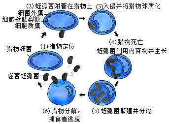

2017年北京市海淀区中考生物试题 · 科普阅读 第45题
45. 科普阅读题
1897年，人们发现了志贺氏菌，又称痢疾杆菌．感染这类细菌后，常导致水样便、急性腹痛、发烧等．志贺氏菌每年引起大约1.63亿人患严重痢疾，并夺走超过100万人的生命，可谓是臭名昭著！
众所周知，抗生素是人们对抗这些恶魔的有力武器．但因为这些武器被滥用，许多细菌出现了耐药性，其中一些细菌甚至对多种抗生素都具有耐药性，成为“超级细菌”．人们如何抵抗愈发猖獗的耐药菌呢？
在自然界中，生存着一种噬菌蛭弧菌（下面简称蛭弧菌），它以其他种类的细菌为食．“捕食”的对象正是多种致病菌，如大肠杆菌、志贺氏菌．其“捕食”过程见图．

目前，人类没有发现与蛭弧菌相关 疾病报道．因此，科学家们提出“以菌治菌”的设想，即利用蛭弧菌去抗击病原菌的感染．但蛭弧菌本身也是一种细菌，动物的免疫系统如果发现它们，会怎样对待这些“友军”？科学家用斑马鱼做了研究．在预实验中，将蛭弧菌注射进斑马鱼的后脑，24小时后，这些斑马鱼全部存活，而且后脑内的蛭弧菌数量逐渐减少．这样来看，蛭弧菌和斑马鱼短期内的“和谐共存”是可以达到的。
疾病报道．因此，科学家们提出“以菌治菌”的设想，即利用蛭弧菌去抗击病原菌的感染．但蛭弧菌本身也是一种细菌，动物的免疫系统如果发现它们，会怎样对待这些“友军”？科学家用斑马鱼做了研究．在预实验中，将蛭弧菌注射进斑马鱼的后脑，24小时后，这些斑马鱼全部存活，而且后脑内的蛭弧菌数量逐渐减少．这样来看，蛭弧菌和斑马鱼短期内的“和谐共存”是可以达到的。
接下来，研究者开始了“以菌治菌”环节．他们先向一群斑马鱼后脑接种了致死剂量的志贺氏菌，然后对其中的部分斑马鱼再注射蛭弧菌．研究者发现，相比于对照组，注射了蛭弧菌的斑马鱼后脑内志贺氏菌大量减少，72小时后斑马鱼的存活率也更高。
在此过程中，斑马鱼的免疫系统也没闲着：白细胞探测到蛭弧菌后，它们会聚集到注射部位将蛭弧菌吞噬．这看起来是“恩将仇报”，但免疫系统其实也是在尽忠职守．随后，研究者利用药物削弱了斑马鱼的免疫系统，再用志贺氏菌感染它们．这时，尽管蛭弧菌依然神勇，斑马鱼的存活率却明显下降，这说明免疫系统并不只是在拖蛭弧菌的后腿。
至此，研究者认为，在抗击志贺氏菌感染时，蛭弧菌和斑马鱼免疫系统能巧妙地“配合”：蛭弧菌对志贺氏菌的“捕食”开始得非常迅速，能够在感染初期控制住志贺氏菌繁殖的势头，帮免疫系统减轻应对的压力．而等到大批白细胞赶来时，蛭弧菌已经饱餐过一顿，收拾志贺氏菌余孽的工作，免疫系统自己也能完成好。
在耐药菌问题愈发严峻的当下，我们都迫不及待地想找到新的应对手段．前景越令人期待，研究者的推进工作也越要细致周密．蛭弧菌能不能真正作为“活的抗菌药”加入人类与病原菌的战争当中，我们将继续关注。
（1）志贺氏菌是引起痢疾的病原体，能破坏人体大肠内表面的______细胞，影响大肠对___的吸收，引起水样便。
（2）蛭弧菌的“捕食”过程可以分为以下几个阶段：识别→吸附→__→利用_____生长→增殖→裂解宿主细胞．由此可见，蛭弧菌的生活方式为_______________。
（3）进入斑马鱼体内的蛭弧菌和志贺氏菌，能够被__________吞噬．在人体内，类似的免疫方式属于___________和_______________。（选填下列字母）
A．特异性免疫B．非特异性免疫 C．第一道防线D．第二道防线
（4）文章中提到了多个实验，见表．其中能表明在抗击志贺氏菌感染时，蛭弧菌和斑马鱼免疫系统巧妙“配合”的实验组合是_________。（选填表中的数字）
实验 | 1 | 2 | 3 | 4 |
处理 方法 | 免疫系统正常；注射蛭弧菌 | 免疫系统正常；注射大量志贺氏菌 | 免疫系统正常；先注射大量志贺氏菌再注射蛭弧菌 | 免疫系统异常；先注射大量志贺氏菌再注射蛭弧菌 |
结果 | 斑马鱼全部存活 | 斑马鱼存活率很低 | 志贺氏菌大量减少，斑马鱼存活率高 | 斑马鱼存活率低 |
（5）关于能否将蛭弧菌制成药物替代抗生素，应用于人体疾病的治疗，下列叙述不正确的是______。（选填下列字母）
A．根据斑马鱼的实验结果，说明蛭弧菌一定能用于人体疾病的治疗
B．蛭弧菌对其他病原菌的杀伤能力还有待验证
C．如何避免大量蛭弧菌杀死有益的共生菌群，还需进一步研究
D．“以菌治菌”属于生物防治，不会让志贺氏菌产生耐药性